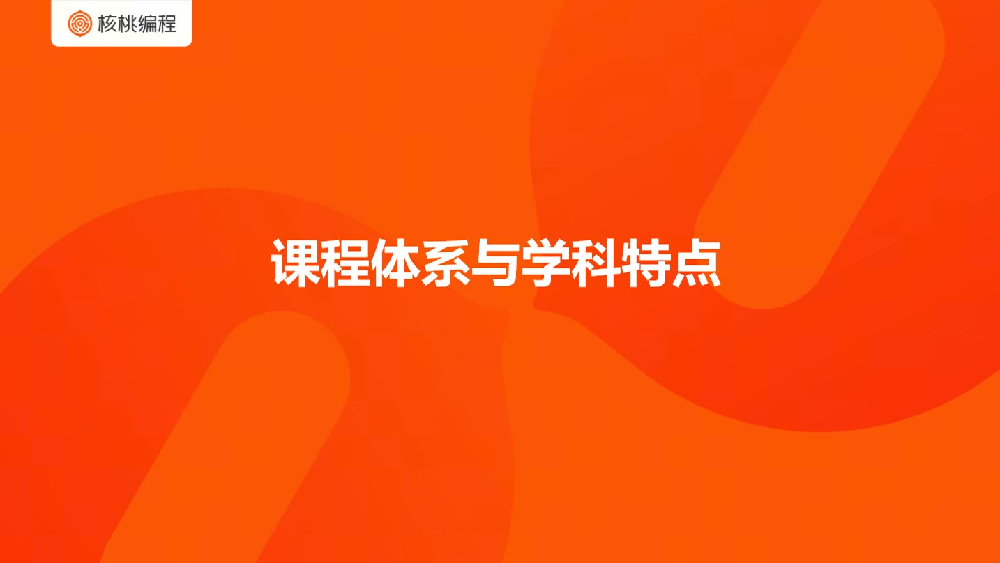
大家好，上节课咱们把课导工作的全流程过了一遍，这节课来讲核桃的课程体系和学科特点。先说说这节课为什么重要。咱们接手的家长，孩子已经在核桃学完了第一阶段六个月，马上要进入第二阶段的图形化算法长期班。这批家长对编程、考级、赛事都已经有了解，问的问题会很具体，比如接下来学什么、课怎么排、能冲什么证。所以咱们自己得先把课程体系吃透，讲得清、讲得准。开始之前，先做个小调查，在座的各位老师，之前曾接触过什么类型的教培工作？大家在屏幕上选一下。
互动题（调查，无对错）
之前曾接触过什么类型的教培工作？
- A. 学科类
- B. 编程类
- C. 兴趣类
- D. 没接触过
选错后：直接继续
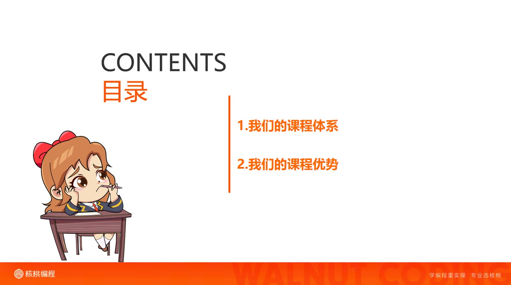
这节课分两部分，第一部分是我们的课程体系，第二部分是我们的课程优势。进入正题之前，再请大家想一个问题。不管是平时带班，还是做续报沟通，产品和个人能力哪个更重要？这题没有标准答案，凭第一感觉选一个就好。
互动题（调查，无对错）
产品和个人能力哪个更重要？
- A. 产品
- B. 个人能力
选错后：直接继续
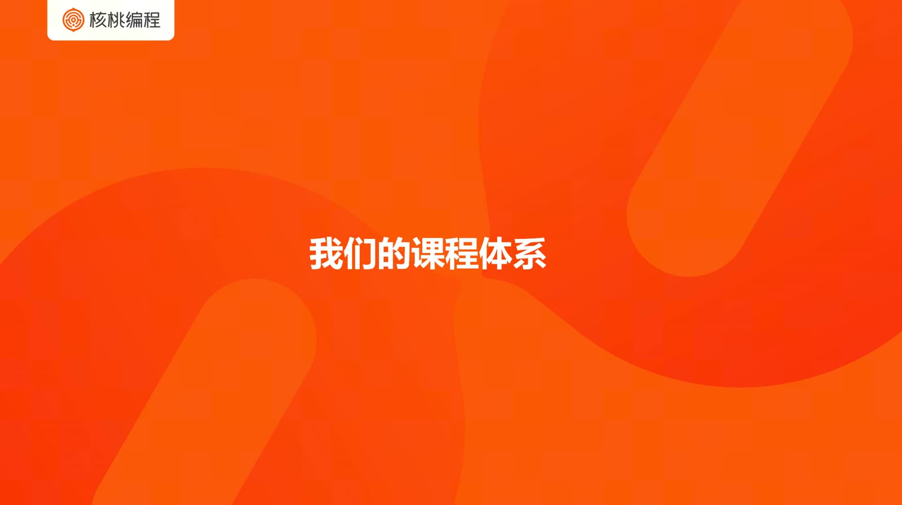
这题确实没有标准答案，两样都不能少。不过我个人更看重产品。产品是根基，产品不行，老师说得再好，孩子学不出效果，家长也不会买账。反过来，产品再好，老师自己说不清楚，家长也感受不到。所以这节课的目的，就是帮大家把产品吃透，知道我们的课程是怎么设计的、好在哪里，跟家长沟通的时候心里有底。下面先看第一部分，课程体系。
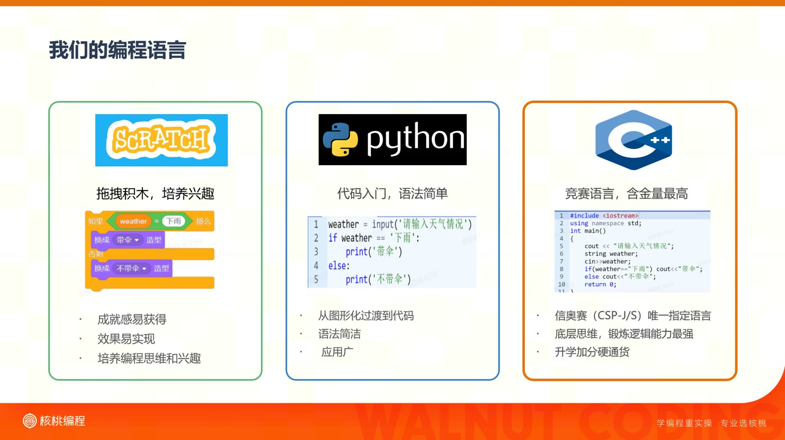
编程语言有很多种，核桃的课程体系里用的是三种，就是屏幕上的Scratch图形化、Python和C++。像Java这类语言，不在我们的体系里。这三门语言是按孩子的认知发展规律一级一级搭起来的。第一门是Scratch图形化，孩子拖拽积木就能写程序，不用记语法，成就感来得快，效果也容易做出来，主要培养的是编程兴趣和编程思维。第二门是Python，它是代码入门语言，语法简洁，应用也广，对孩子来说是从图形化过渡到真正写代码的一步。第三门是C++，它是竞赛语言，含金量最高。为什么这么说？信奥赛，也就是CSP-J和CSP-S，唯一指定的语言就是C++。它锻炼的是底层思维，对逻辑能力的训练最强，所以是升学加分的硬通货。大家再留意一下每张卡片中间的代码，写的是同一件事，下雨就带伞，不下雨就不带伞。逻辑完全一样，从积木到Python再到C++，表达方式越来越接近真正的程序。跟家长解释为什么要从图形化学起，这个例子很好用。好，考考大家，下列哪项是PPT中C++的特点？
互动题
下列哪项是PPT中C++的特点？
- A. 从图形化过渡到代码
- B. 语法简洁
- C. 信奥赛（CSP-J/S）唯一指定语言
- D. 成就感易获得
选错后：重讲本页重触发
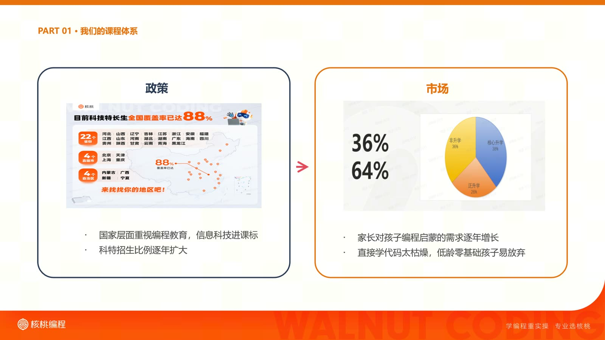
那课程为什么要这样设置？我们从政策和市场两个角度来看。先看政策。国家层面越来越重视编程教育，信息科技已经正式进入中小学课标，科技特长生的招生比例也在逐年扩大。左边这张图显示，目前科技特长生全国覆盖率已经达到88%，涉及22个省份、4个直辖市和4个自治区。再看市场。家长对孩子编程启蒙的需求逐年增长，越来越多的家长知道了C++、知道了信奥赛。右边这组数据把家长分成三类，核心升学占38%，泛升学占26%，两者加起来是64%，非升学占36%。也就是说，多数家长让孩子学编程，或多或少都和升学有关。但有一个现实问题，直接学代码太枯燥，低龄、零基础的孩子很容易放弃。所以我们的体系从图形化起步，先把兴趣和思维建立起来，再一步步过渡到Python和C++。政策有导向，家长有需求，孩子也学得下去，这就是这套课程体系的出发点。
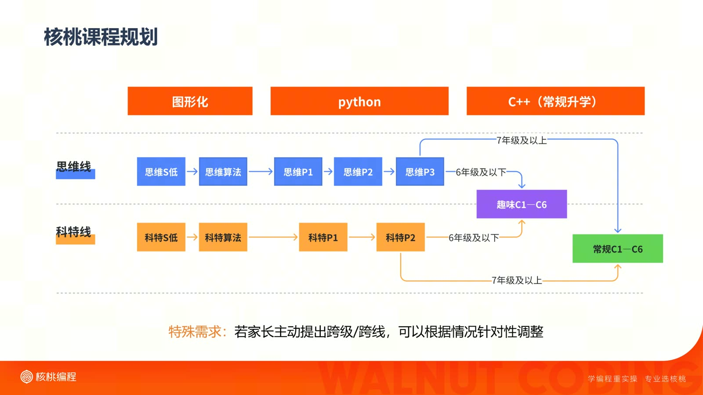
接下来看整体的课程规划。这张图大家一定要看懂，后面讲的内容都挂在这张图上。横着看是三种语言，图形化、Python和C++。竖着看分两条线，上面蓝色是思维线，下面橙色是科特线。两条线的方向一样，都是先学图形化，再学Python，最后衔接C++，但课程和课时安排都不一样，Python的阶段数也不同。思维线的图形化有两个阶段，叫思维S低和思维算法，Python有三个阶段，思维P1、P2、P3。科特线的图形化也是两个阶段，叫科特S低和科特算法，但Python只有两个阶段，科特P1和P2。咱们接手的家长，孩子刚学完的就是S低，接下来要进的就是算法这一阶段。到了C++就不再按思维、科特分了，而是看年级，6年级及以下进入趣味C1到C6，7年级及以上进入常规C1到C6。最后看图下方这行特殊需求。正常情况下，每个孩子都按这条路径一级一级往上学，不跳级，也不跨线。只有家长主动提出想跨级或者跨线，我们才根据孩子的情况针对性调整。注意，提出的一方是家长。课导不能因为觉得孩子学得好，就主动提跳级或者调整进度。
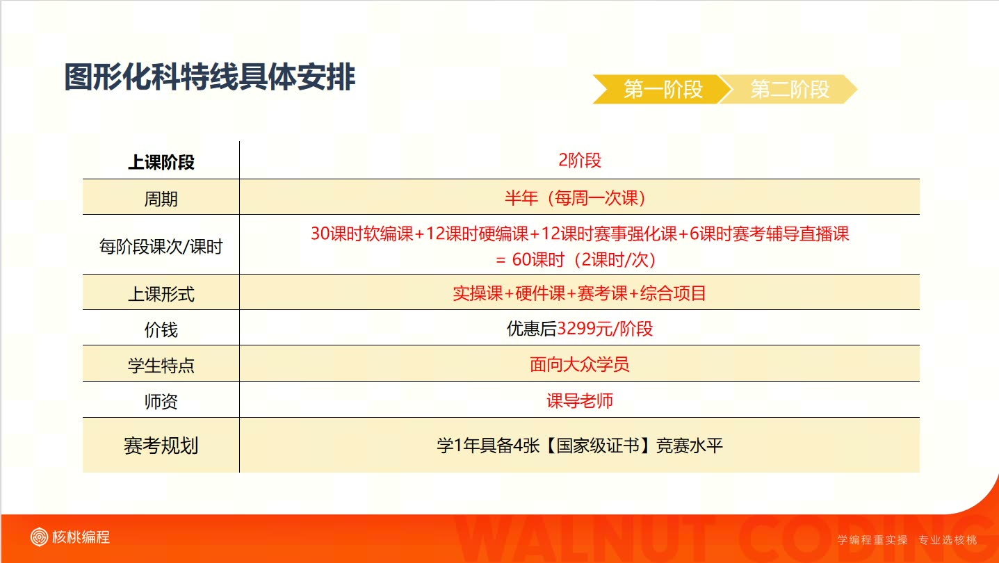
下面按语言逐个展开，先看图形化，从科特线开始。科特线图形化一共两个阶段，每个阶段半年，每周一次课。每个阶段60课时，一次课两课时。这60课时的构成大家一定要记牢，30课时软编课，加12课时硬编课，加12课时赛事强化课，再加6课时赛考辅导直播课。上课形式是实操课、硬件课、赛考课和综合项目。价格是优惠后3299元一个阶段，面向大众学员，师资是课导老师。赛考规划这一栏，我们跟家长同步的是学一年，也就是图形化两个阶段学完，孩子具备四张国家级证书的竞赛水平。这里要特别注意措辞，说的是具备这个水平，不是承诺学完一年一定拿到四张证书。跟家长沟通时，千万别说成保证拿证。
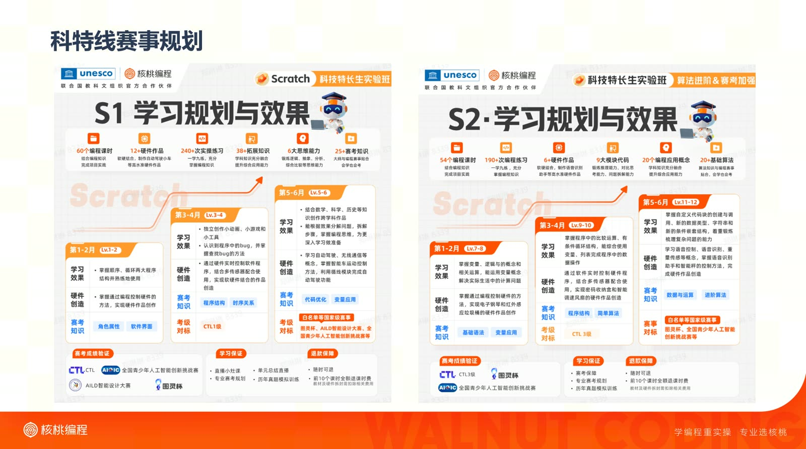
再看科特线图形化两个阶段分别学什么、达到什么效果。左边是第一阶段，Scratch科技特长生实验班，也就是孩子刚学完的这半年。从掌握顺序、循环两大程序结构，到能独立创作小动画、小游戏，再到结合数学、科学等知识做跨学科作品。考级对标CTL1级，同时规划一场白名单等国家级赛事，比如图灵杯、AILD智能设计大赛、全国青少年人工智能创新挑战赛。右边是第二阶段，叫算法进阶和赛考加强，正是咱们接下来要带的阶段。内容明显加深，第1到2个月学变量、逻辑和比较这些概念，第3到4个月学比较运算、条件循环这些程序结构和简单算法，第5到6个月学自定义代码块、新的数据类型和进阶算法。赛考上同样是一次考级加一次比赛，考级对标CTL3级，赛事对标图灵杯、全国青少年人工智能创新挑战赛这类白名单等国家级赛事。图的下方还有学习保证和退款保障，比如专业赛考规划、历年真题模拟训练，课程随时可退，前10个课时全额退课时费，教材和硬件拆封的需要扣除相关费用。家长问二阶段孩子能学到什么、能考什么，这张图就是你的答案。
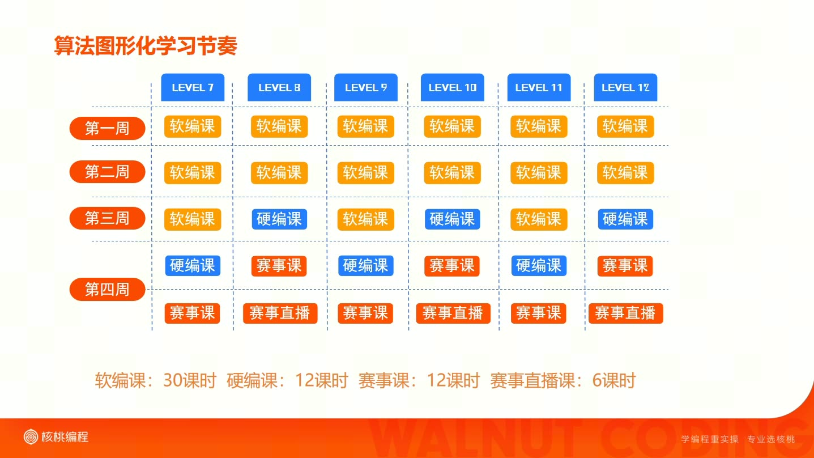
接下来看科特图形的学习节奏，横着看是6个level，一个level对应一个月；竖着看是每个月的第一到第四周。规律是这样的✅ 第 1、2 周：全部上软编课，夯实图形化编程基础，熟悉代码逻辑、完成创意项目；✅ 第 3 周：软编课为主，LEVEL2/4/6 穿插硬编课；✅ 第 4 周：进阶冲刺，LEVEL1/3/5 安排硬编课 + 赛事课；LEVEL2/4/6 安排赛事课 + 专属赛事直播，进行真题训练、赛题解析、模拟备赛。。整个阶段加起来，软编课30课时，硬编课12课时，赛事课12课时，赛事直播课6课时，正好对上前面说的60课时。来判断一下，第一阶段和第二阶段的课时分布一模一样？
互动题
第一阶段和第二阶段的课时分布一模一样？
- A. 对
- B. 错
选错后：重讲本页重触发
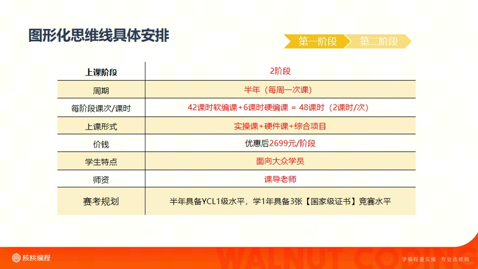
这张是图形化第二阶段，也就是算法阶段的学习节奏。因为难度提升了，硬件课的位置做了调整。双数level和第一阶段一样，第三周是硬编课，第四周是赛事课加赛事直播课。单数level变了，第三周改成软编课，硬编课挪到第四周，和赛事课排在一起。总课时没有变，还是软编30、硬编12、赛事12、赛事直播6，但每周上什么课，两个阶段并不一样。为什么要强调这个？因为二阶段家长常会问，这周孩子上的是什么课，怎么跟上学期不一样。带算法阶段的老师一定要对照这张表看清楚，别给家长和孩子讲错了。好，来做一道题，按科特算法图形化学习节奏，软编课共多少课时？
互动题
按科特算法图形化学习节奏，软编课共多少课时？
- A. 42课时
- B. 12课时
- C. 30课时
- D. 6课时
选错后：直接继续
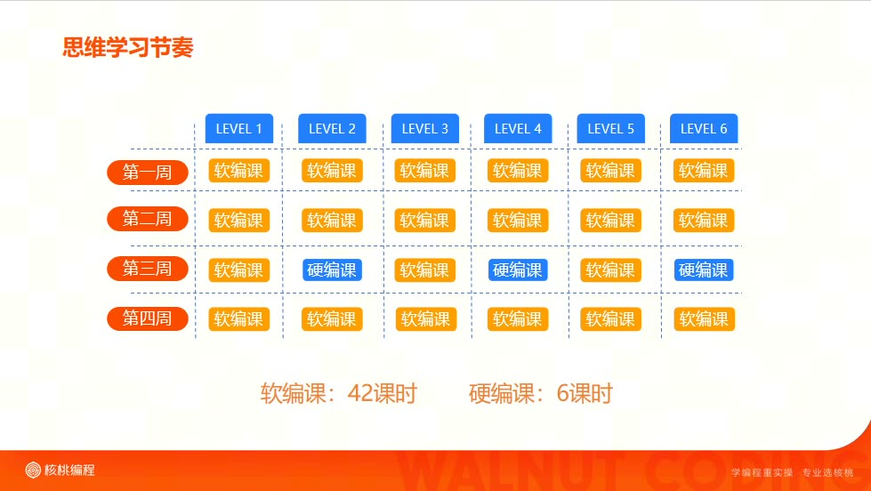
思维线的学习节奏就简单多了，一阶段和二阶段的分布是一样的。每个level四周基本都是软编课，只有level2、level4和level6这三个月，第三周换成一次硬编课。算下来软编课42课时，硬编课6课时。
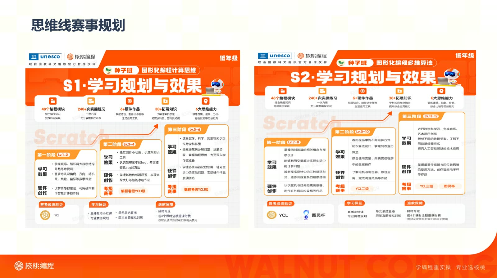
赛考规划这里，思维线和科特线也不一样。思维线第一阶段只规划一次考级，到第二阶段才同时规划一次考级和一场国家级或白名单比赛，比如图上的图灵杯。还有一个细节，细心的老师可能已经发现了，科特线对标的考级是CTL，思维线对标的考级是YCL。这两个名字很像，跟家长沟通时千万不能说混。我们马上来确认一下，科特线的赛事规划哪个考级？
互动题
科特线的赛事规划哪个考级？
- A. CTL
- B. YCL
选错后：重讲本页重触发
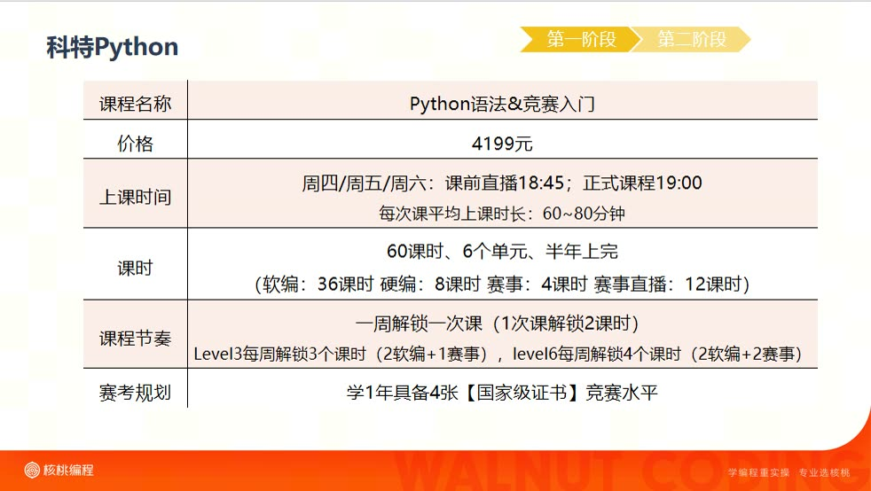
赛考规划这里，思维线和科特线也不一样。思维线第一阶段只规划一次考级，到第二阶段才同时规划一次考级和一场国家级或白名单比赛，比如图上的图灵杯。还有一个细节，细心的老师可能已经发现了，科特线对标的考级是CTL，思维线对标的考级是YCL。这两个名字很像，跟家长沟通时千万不能说混。我们马上来确认一下，按思维线赛事规划，S2第三阶段（Lv.9-10）对标的考级赛事是？
互动题
按思维线赛事规划，S2第三阶段（Lv.9-10）对标的考级赛事是？
- A. YCL二级、图灵杯
- B. CTL 3级
- C. YCL三级、图灵杯
- D. 编程考级YCL1级
选错后：直接继续
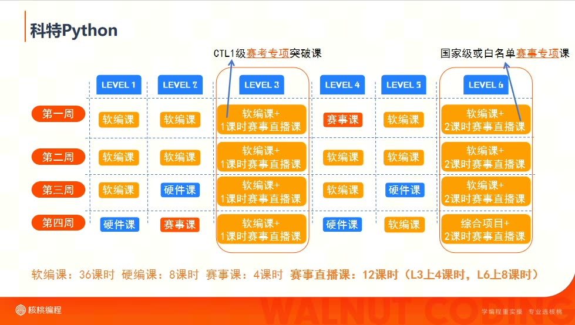
为什么level3和level6每周要多解锁一到两个课时？看这张图就明白了。科特Python把考级和赛事的专项课集中放在了这两个月。level3是CTL1级的赛考专项突破课，每周在软编课之外再加1课时赛事直播课，四周一共4课时。level6是国家级或白名单赛事的专项课，每周加2课时赛事直播课，四周一共8课时。两块加起来，正好是前面说的12课时赛事直播课。相当于在考前把专项内容集中突破。
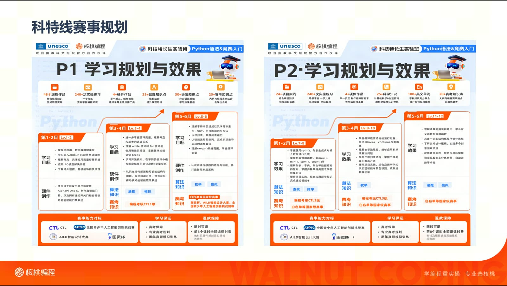
再看科特Python两个阶段的赛事规划。P1阶段规划一次CTL1级考级和一场白名单等国家级赛事，比如图灵杯、AILD智能设计大赛、全国青少年人工智能创新挑战赛。P2阶段同样是一次考级加一次赛事，考级对标CTL3级。一年两次考级、两场比赛，这就是前面说的学一年具备四张国家级证书水平。
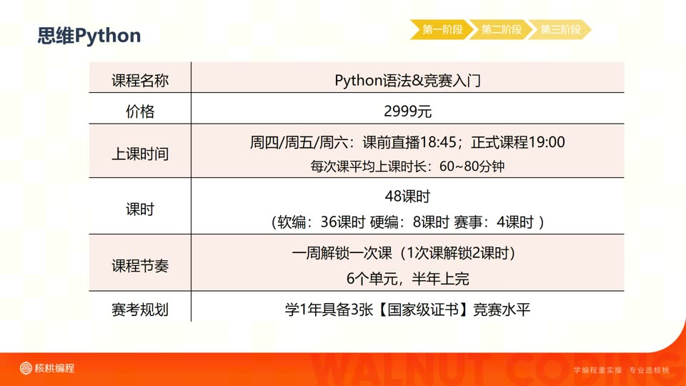
再来看思维Python。首先周期不一样，思维Python一共三个阶段，也就是说思维线的孩子需要一年半才能把Python学完。课程名称同样叫Python语法和竞赛入门，价格是2999元一个阶段。上课时间和科特线一样，周四、周五、周六，晚上6点45课前直播，7点正式上课。课时是48课时，软编36课时，硬编8课时，赛事4课时，没有赛事直播课。节奏是一周解锁一次课，一次两课时，6个单元，每个阶段半年上完。赛考规划这一栏，思维Python学一年可以具备三张国家级证书的竞赛水平。具体的考级和赛事，我们后面赛事那一页再看。价格大家对比着记，科特Python是4199元，思维Python是2999元。
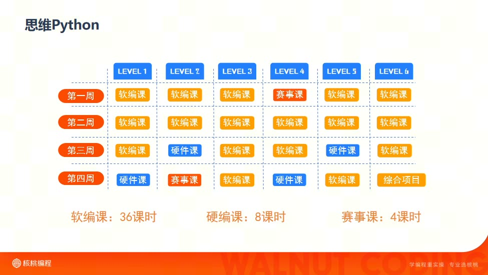
思维Python的课时安排看这张图。硬件课分布在level1、level2、level4和level5，赛事课在level2和level4。level3这个月全部是软编课，level6最后一周是综合项目，所以level3和level6这两个月都没有硬件课和赛事课。合起来就是软编36课时，硬编8课时，赛事4课时。
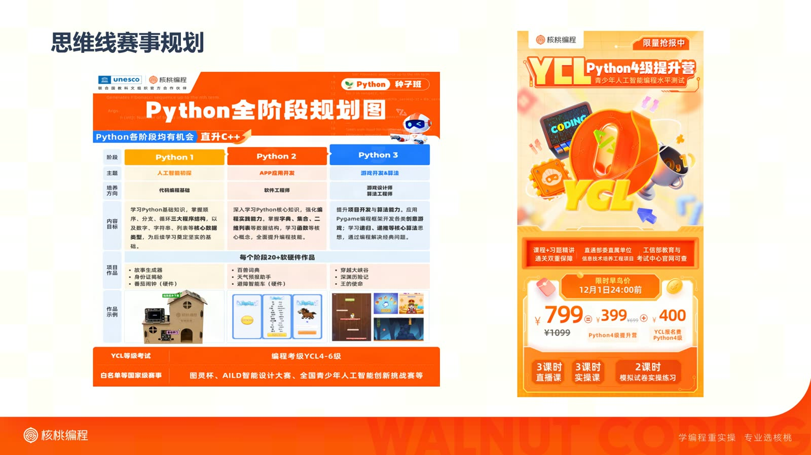
思维线Python的赛事怎么规划？左边是思维线Python的全阶段规划图。Python1的主题是人工智能初探，培养方向是代码编程基础；Python2是APP应用开发；Python3是游戏开发和算法。每个阶段都有20多个软硬件作品，考级对标YCL4到6级，赛事有图灵杯、AILD智能设计大赛、全国青少年人工智能创新挑战赛这些白名单等国家级赛事。图上方还写着，Python各阶段均有机会直升C++。但要注意，思维线课程里的赛事课比较少，所以思维线的孩子如果想报YCL考级或者国家级赛事，需要额外付费购买赛考辅导课程，也就是右边这个YCL Python4级提升营。这一页大家知道有这个提升营就可以，家长问到时能说出来。
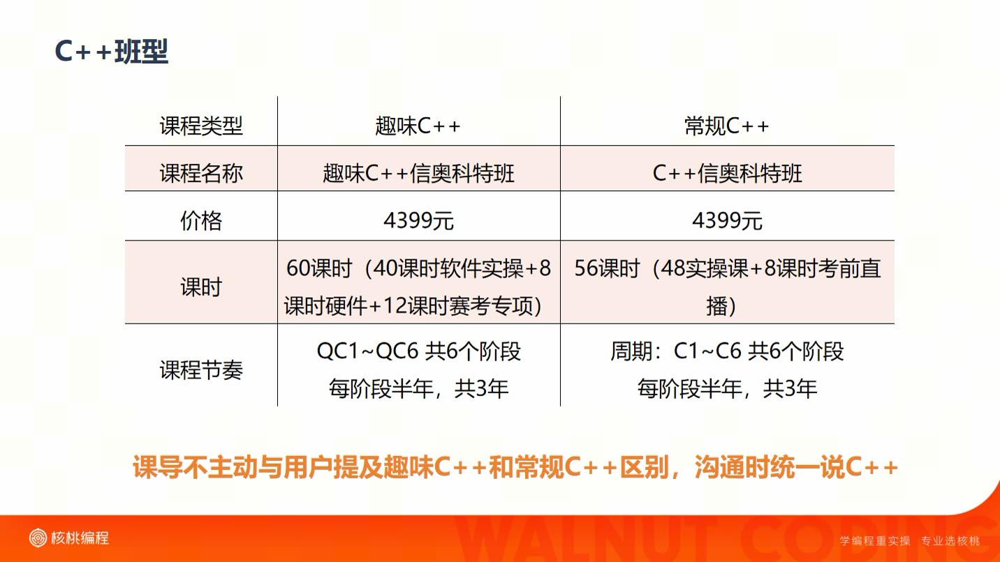
Python学完，不管思维线还是科特线，都会进入C++。到了C++就不按思维、科特分了，而是按年级分班。6年级及以下进入趣味C++，课程名称是趣味C++信奥科特班；7年级及以上进入常规C++，课程名称是C++信奥科特班。所以上哪一个，是由孩子的年级决定的，不是家长任意挑选。两者价格一样，都是4399元。课时不一样，趣味C++是60课时，包含实操、硬件和赛考；常规C++是56课时，48课时实操课加8课时考前直播。两个都是6个阶段，趣味C++是QC1到QC6，常规C++是C1到C6，每阶段半年，一共三年。有人会以为趣味C++有硬件课所以更贵，其实价格完全一样。最后是页面底部这条红字规则，课导不主动跟家长提趣味C++和常规C++的区别，沟通时统一说C++。
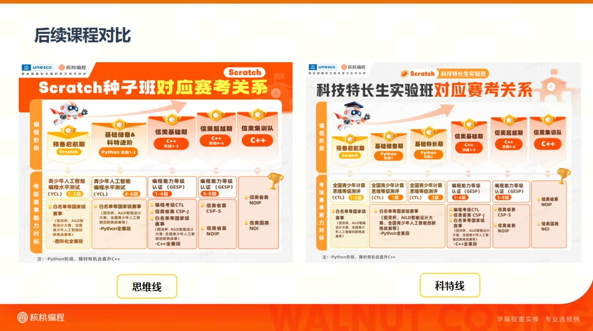
这两张图把两条线的完整路径和对应赛考放在了一起，左边是思维线，右边是科特线。思维线是Scratch预备启航期之后，学三个阶段的Python，再进入C++的信奥基础期、信奥超越期，最后是信奥集训队。科特线是Scratch之后学两个阶段的Python，然后同样进入C++。图形化和Python阶段，思维线对标的考级是YCL，科特线对标的是CTL；到了C++阶段，两条线都往GESP、CSP-J、CSP-S、NOIP、NOI这条信奥路线走。这里请大家记住一句话，思维线和科特线是两个独立的体系，按规划不交叉。两条线有一个共同规则，写在图下方，Python阶段随时有机会直升C++。但还是那个原则，家长没有主动提跳级，老师尽量不要主动去讲。来看一道题，思维线的Python分为几个阶段？
互动题
思维线的Python分为几个阶段？
- A. 1个阶段
- B. 2个阶段
- C. 3个阶段
- D. 4个阶段
选错后：重讲本页重触发
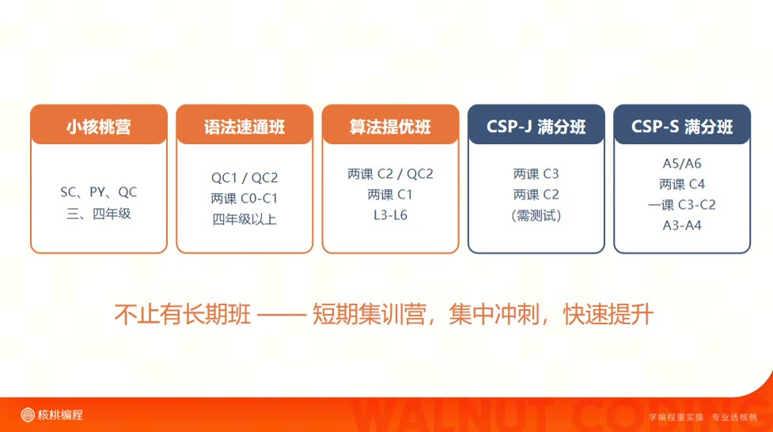
这两张图把两条线的完整路径和对应赛考放在了一起，左边是思维线，右边是科特线。思维线是Scratch预备启航期之后，学三个阶段的Python，再进入C++的信奥基础期、信奥超越期，最后是信奥集训队。科特线是Scratch之后学两个阶段的Python，然后同样进入C++。图形化和Python阶段，思维线对标的考级是YCL，科特线对标的是CTL；到了C++阶段，两条线都往GESP、CSP-J、CSP-S、NOIP、NOI这条信奥路线走。这里请大家记住一句话，思维线和科特线是两个独立的体系，按规划不交叉。两条线有一个共同规则，写在图下方，Python阶段随时有机会直升C++。但还是那个原则，家长没有主动提跳级，老师尽量不要主动去讲。好，检验一下，思维线的Python分为几个阶段？
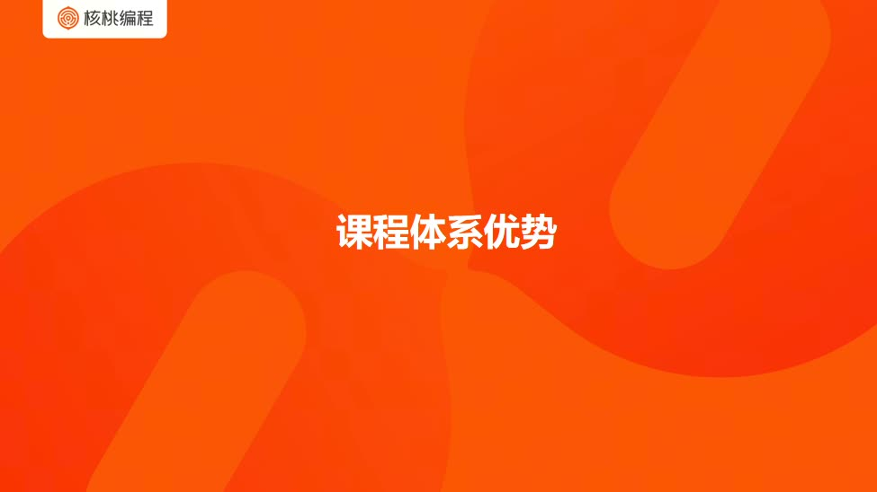
课程体系到这里就讲完了，我们知道了核桃有哪些课、每门课怎么排、对应什么赛考。接下来进入第二部分，看看我们的课程到底好在哪里。这部分是跟家长沟通时最常用的素材，尤其是家长担心孩子学不会、坐不住的时候。
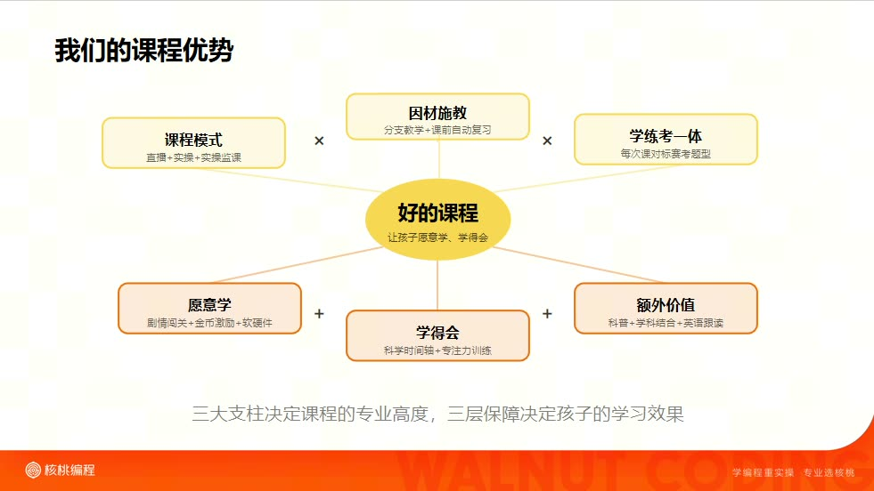
什么样的课程才算好课程？就是中间这句话，让孩子愿意学、学得会。我们靠两样东西来实现，三大支柱和三层保障。三大支柱决定课程的专业高度，在上面一排。第一个是课程模式，直播加实操加实操监课。第二个是因材施教，分支教学加课前自动复习。第三个是学练考一体，每次课都对标赛考题型。三层保障决定孩子的学习效果，在下面一排。第一层是愿意学，靠剧情闯关、金币激励和软硬件结合。第二层是学得会，靠科学时间轴和专注力训练。第三层是额外价值，包括科普知识、校内学科结合和英语跟读。这张图是整个第二部分的地图，接下来我们一块一块展开。
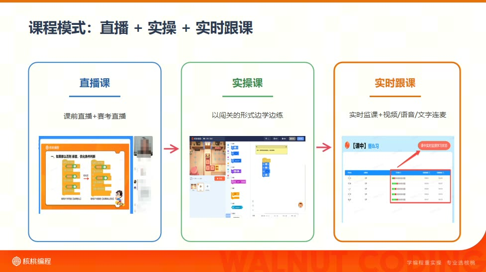
先看第一个支柱，课程模式，由三部分组成。第一部分是直播课，包括课前直播和赛考直播，赛考直播也就是前面课表里的赛事直播课。第二部分是实操课，孩子以闯关的形式边学边练，有剧情互动、闯关特效和金币奖励。第三部分是实时跟课，孩子上课的时候，老师在核桃辅导的界面上能实时看到每个孩子的进度，也能看到某一个孩子的学习界面。孩子遇到不会的题，老师可以主动发起视频、语音连麦或者发文字消息。这里有个容易混的点，直播课只有课前直播和赛考直播两种，视频、语音连麦属于实时跟课，不属于直播课。
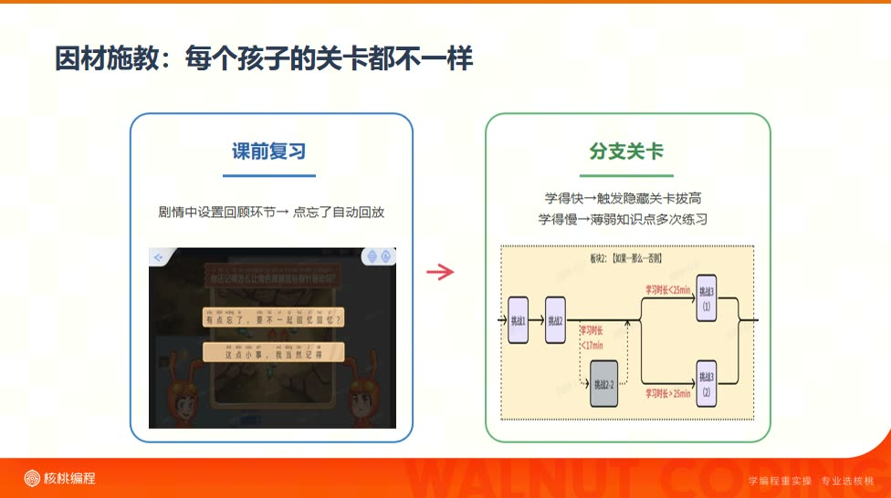
第二个支柱，因材施教，核心就是每个孩子的关卡都不一样，体现在两个地方。一个是课前复习。课程剧情里设置了回顾环节，会问孩子上次学的知识还记不记得，孩子如果点了有点忘了，系统就会自动回放这个知识点；记得的孩子就直接往下走。另一个是分支关卡。系统会根据孩子的学习时长自动分流，学得快的孩子会触发隐藏关卡，进行拔高训练；学得慢的孩子，会针对薄弱的知识点多练几次。这样慢的不掉队，快的也不会吃不饱。二阶段家长常担心算法变难孩子跟不上，这一点就可以讲给他听。那么问题来了，每次课程所有孩子学习的关卡都是一样的？
互动题
每次课程所有孩子学习的关卡都是一样的？
- A. 对
- B. 错
选错后：重讲本页重触发
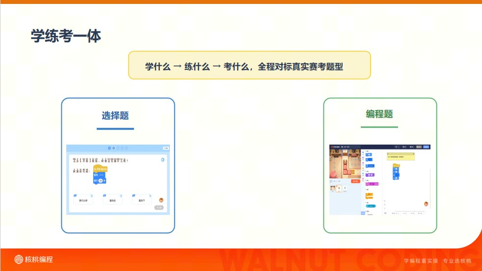
第二个支柱，因材施教，核心就是每个孩子的关卡都不一样，体现在两个地方。一个是课前复习。课程剧情里设置了回顾环节，会问孩子上次学的知识还记不记得，孩子如果点了有点忘了，系统就会自动回放这个知识点；记得的孩子就直接往下走。另一个是分支关卡。系统会根据孩子的学习时长自动分流，学得快的孩子会触发隐藏关卡，进行拔高训练；学得慢的孩子，会针对薄弱的知识点多练几次。这样慢的不掉队，快的也不会吃不饱。二阶段家长常担心算法变难孩子跟不上，这一点就可以讲给他听。那么问题来了，按因材施教的分支关卡，学得快的孩子会怎样？
互动题
按因材施教的分支关卡，学得快的孩子会怎样？
- A. 点忘了自动回放
- B. 剧情中设置回顾环节
- C. 触发隐藏关卡拔高
- D. 薄弱知识点多次练习
选错后：直接继续
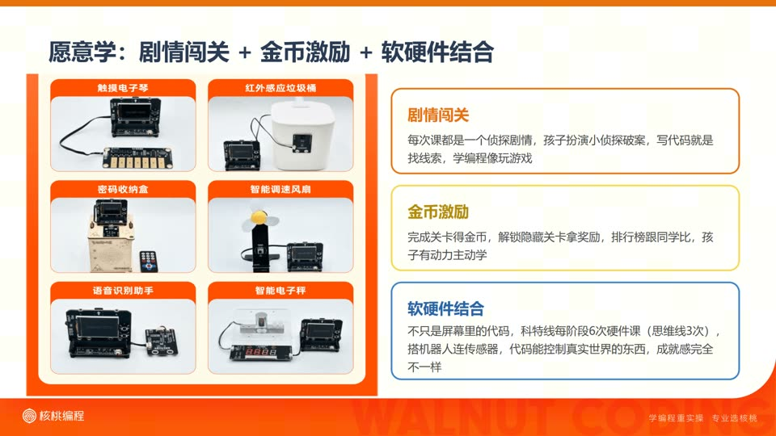
讲完三大支柱，再看三层保障。第一层是愿意学，靠剧情闯关、金币激励和软硬件结合这三块。先说剧情闯关。每次课都是一个侦探剧情，孩子扮演小侦探去破案，写代码就像在找线索，学编程就像玩游戏。孩子是被剧情推着往下走的，自然更愿意学。
下面这段视频，展示的是课程里剧情闯关的实际画面。大家仔细看看，孩子在课上是怎么跟着剧情一步步闯关、一步步写代码的。以后家长问孩子平时怎么上课，你脑子里就有画面了。
第二块是金币激励。孩子完成关卡就能得到金币，解锁隐藏关卡还能拿奖励，还有排行榜可以跟同学比一比，孩子就有动力主动去学。接下来这段视频，大家看看金币是怎么发给孩子的，孩子在客户端里又是怎么使用金币的。

第三块是软硬件结合。编程不只是屏幕里的代码，孩子还要搭机器人、连传感器，让代码控制真实世界里的东西，这种成就感跟单纯写程序完全不一样。我们的课程里，图形化、Python和趣味C++都有硬件课，只有常规C++没有。以图形化算法阶段为例，这一阶段科特线有6次硬件课，思维线有3次。左边这六个作品，触摸电子琴、红外感应垃圾桶、密码收纳盒、智能调速风扇、语音识别助手和智能电子秤，展示的是图形化算法阶段科特线的硬件课内容，也就是二阶段科特线的孩子接下来要做的作品。家长问二阶段做什么硬件，可以直接拿这几个作品举例。
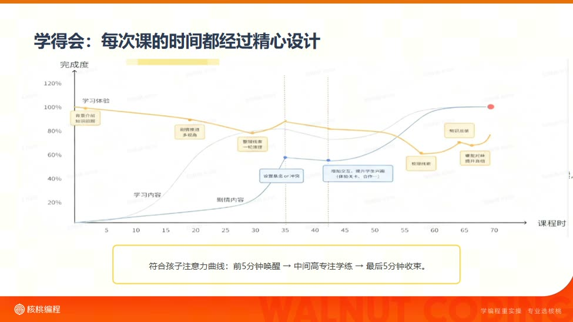
第二层保障是学得会，关键在于每次课的时间都经过精心设计。这张图横轴是课程时间，几条曲线分别是学习体验、学习内容和剧情内容，整体是按这个年龄段孩子的注意力曲线来设计的。前5分钟是唤醒，用背景介绍和知识回顾把孩子带进状态。中间是高专注的学练阶段，剧情不断推进，在注意力容易下滑的时候设置悬念或冲突，再加入体验关卡、合作这类交互，把孩子的兴趣重新拉起来。最后5分钟收束，做知识总结和破案对峙，让孩子带着成就感下课。所以孩子坐得住、学得进去，不是靠硬撑，而是课程本身的节奏在帮他。
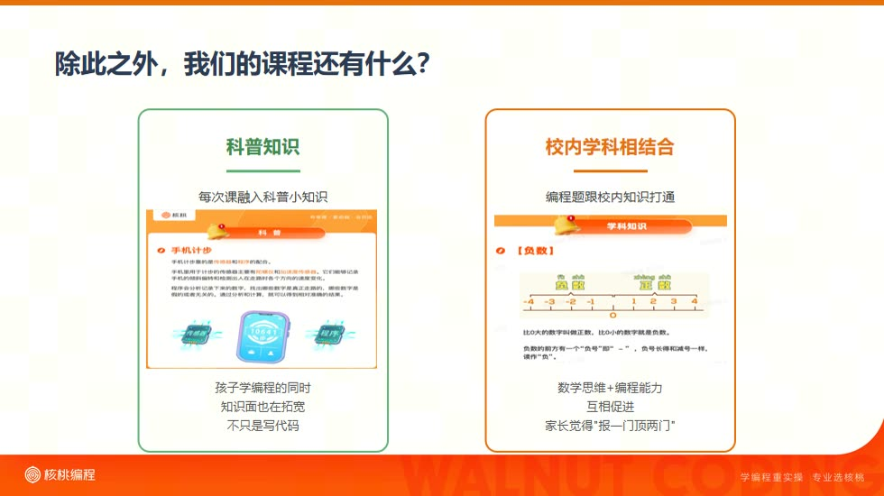
第三层保障是额外价值。第一个是科普知识，每次课都会融入科普小知识，比如屏幕上讲的手机计步原理，孩子学编程的同时知识面也在拓宽，不只是写代码。第二个是和校内学科相结合，编程题会跟校内知识打通，比如图上的负数。数学思维和编程能力互相促进，家长会觉得报一门顶两门。另外，前面总览里提到的英语跟读，也是额外价值的一部分。
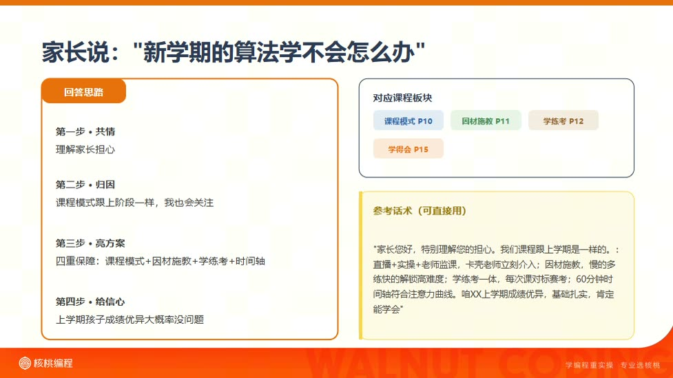
课程优势讲完了，再看怎么用到实际沟通里。下面是三个跟课程相关的家长常见异议。第一个，家长说，新学期的算法学不会怎么办？孩子从S低升到算法，难度确实上来了，这是二阶段家长最常问的一句。回答分四步。第一步共情，先理解家长的担心，不要一上来就反驳。第二步归因，告诉家长课程模式跟上学期一样，孩子已经适应了，老师也会一直关注。第三步亮方案，讲四重保障，课程模式、因材施教、学练考一体和时间轴。第四步给信心，结合孩子上学期的表现，告诉家长孩子基础扎实，大概率没有问题。参考话术可以这样说，家长您好，特别理解您的担心，咱们的课程跟上学期是一样的，直播加实操加老师监课，孩子卡壳老师会立刻介入；因材施教，慢的多练，快的解锁高难度；学练考一体，每次课都对标赛考；时间轴也符合孩子的注意力曲线。孩子上学期成绩优异，基础扎实，肯定能学会。
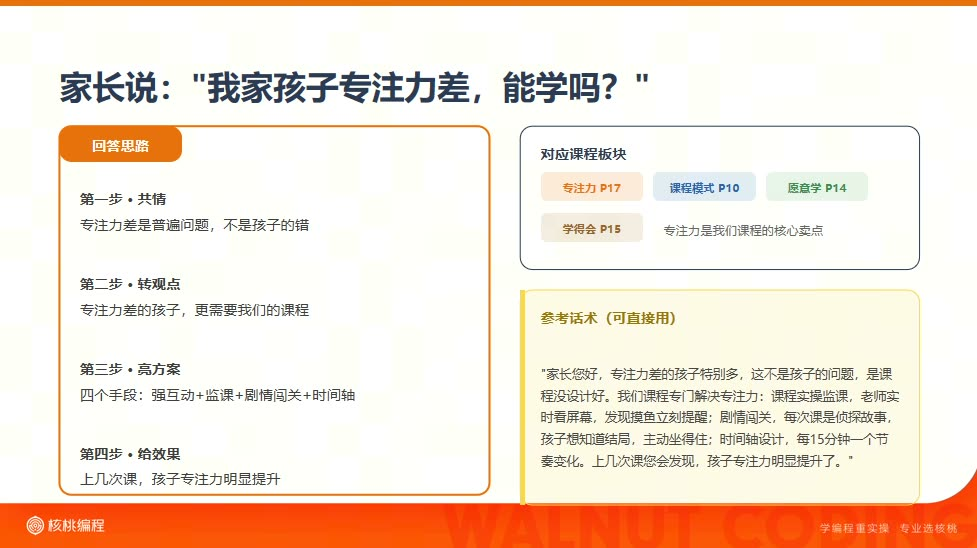
第二个异议，家长说，我家孩子专注力差，能学吗？图形化阶段的孩子年纪普遍比较小，这个担心很常见。回答也是四步。第一步共情，告诉家长专注力差是这个年龄段的普遍问题，不是孩子的错。第二步转观点，专注力差的孩子，反而更需要我们这样的课程，专注力本身就是我们课程的核心卖点。第三步亮方案，讲四个手段，强互动、监课、剧情闯关和时间轴。第四步给效果，告诉家长上几次课就能看到孩子专注力明显提升。参考话术是这样的，家长您好，专注力差的孩子特别多，这不是孩子的问题，关键看课程设计得好不好。我们的课程专门解决专注力，实时监课，老师能看到孩子的屏幕，发现走神立刻提醒；剧情闯关，每次课都是侦探故事，孩子想知道结局，自然坐得住；时间轴设计上，每15分钟就有一次节奏变化。上几次课您就会发现，孩子的专注力明显提升了。对续费家长，你还可以结合孩子第一阶段的实际上课表现来讲，会更有说服力。
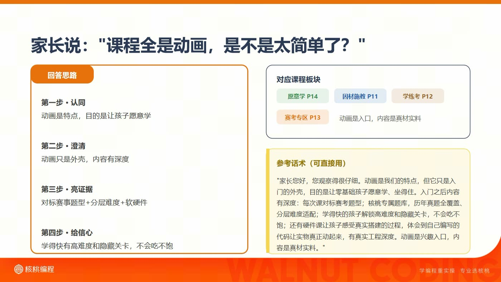
第三个异议，有些家长会说，课程全是动画，是不是太简单了？回答同样分四步。第一步认同，先肯定家长观察得仔细，动画确实是我们的特点，目的是让孩子愿意学。第二步澄清，动画只是外壳，内容是有深度的。第三步亮证据，每次课都对标赛事题型，有核桃专属题库，历年真题全覆盖，难度分层适配，还有硬件课让孩子动手搭建，手脑同步练习。孩子动手搭建，还原真实生活场景。第四步给信心，学得快的孩子会解锁高难度和隐藏关卡，不会吃不饱。最后用一句话收住，动画是兴趣的入口，内容是真材实料。对二阶段家长，你还可以拿孩子接下来要学的算法内容，以及对应的考级、赛事目标来佐证，课程到底简不简单，家长一听就明白。
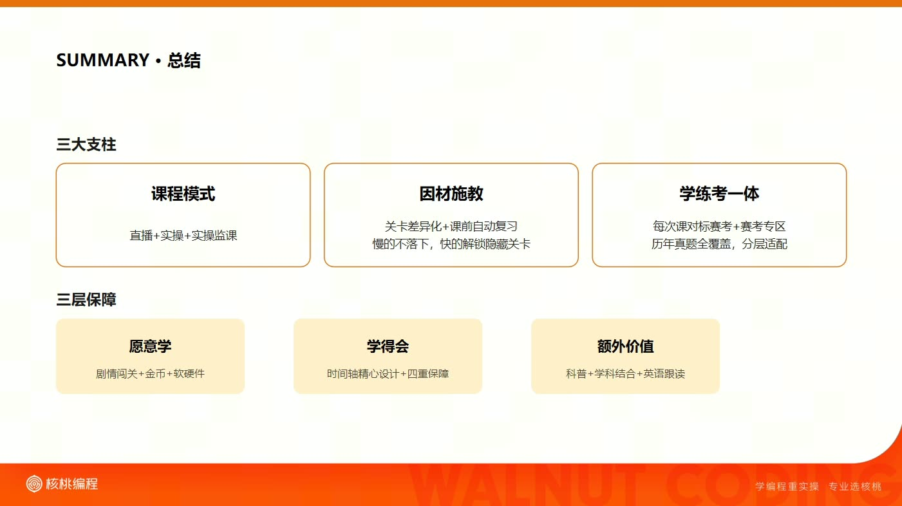
最后把课程优势总结一下，就是三大支柱加三层保障。三大支柱决定专业高度。课程模式是直播加实操加实操监课。因材施教是关卡差异化加课前自动复习，慢的不落下，快的解锁隐藏关卡。学练考一体是每次课对标赛考，配合赛考专区，历年真题全覆盖，分层适配。三层保障决定学习效果。愿意学靠剧情闯关、金币和软硬件结合；学得会靠精心设计的时间轴和四重保障；额外价值是科普、学科结合和英语跟读。这张总结页建议大家记在本子上，前面三个异议的回答，素材基本都从这里来。
再给大家看看我们的赛事成绩，这是家长很关心的硬指标。第一张，CTL全国青少年计算思维等级测评，核桃学员C++一级通过率高达94.84%，累计获得CTL证书的核桃学员达到30692人。第二张，2025年教育部白名单赛事，核桃助力104050名学员拿下科技特长生入场券，获奖人数位居青少年编程行业第一，是第二、第三名编程机构的总和。第三张，全国信息学奥林匹克竞赛，2026年NOI成绩出炉，金牌的二分之一在核桃，一共是29金、109银、66铜。家长问到核桃的赛考实力，这些数据可以直接用。
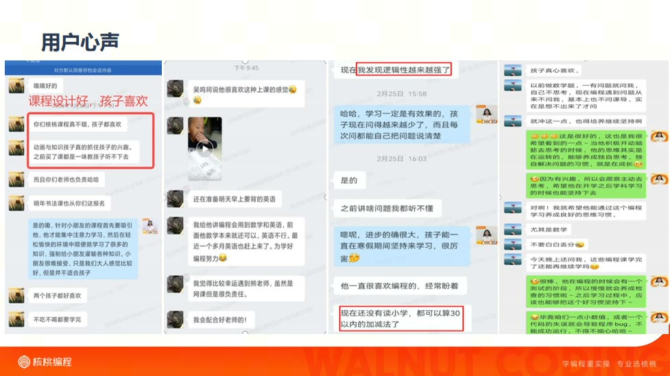
再来看家长的真实反馈。第一位家长说，核桃的课程真不错，孩子都喜欢，动画和知识真正抓住了孩子的兴趣，之前买的课都是一味地教，孩子听不下去。第二位家长提到，自己跟孩子讲编程会用到数学和英语，孩子为了学好编程，最近一个多月英语也赶上来了。第三位家长发现孩子的逻辑性越来越强，问问题越来越少，问的时候也能自己把问题说清楚，还没上小学就能算30以内的加减法。第四位家长说，以前孩子做数学题一遇到问题就来问，现在会先自己思考。这些都是课程设计在孩子身上的实际体现。
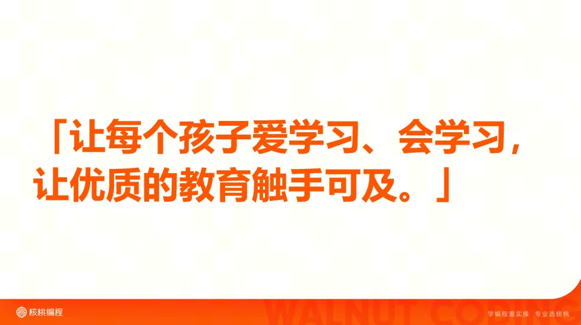
最后，分享核桃的教育理念，让每个孩子爱学习、会学习，让优质的教育触手可及。前面讲的愿意学、学得会，其实都是在落实这句话。
好啦，这节课程体系的内容就到这里。最后请大家扫一扫屏幕上的二维码，填写课程体系的调研问卷，把你的真实感受告诉我们。填写完成后，在下面的互动题里确认一下。来判断一下，是否已完成问卷填写？
互动题
是否已完成问卷填写？
- A. 是
- B. 否
选错后：直接继续
题库（阶段小测 + 综合测试）
T-S01 · 阶段练习题 · 课程体系·阶段1 · 答案 BD
（多选，选2项）按PPT，下列哪些是C++的特点？
- A. 成就感易获得
- B. 信奥赛（CSP-J/S）唯一指定语言
- C. 语法简洁
- D. 升学加分硬通货
T-S02 · 阶段练习题 · 课程体系·阶段1 · 答案 D
目前科技特长生全国覆盖率已达多少？
- A. 64%
- B. 36%
- C. 38%
- D. 88%
T-S03 · 阶段练习题 · 课程体系·阶段1 · 答案 B
一名五年级孩子在思维线学完思维P3，按核桃课程规划应衔接哪个课程？
- A. 科特P2
- B. 趣味C1—C6
- C. 常规C1—C6
- D. 思维算法
T-S04 · 阶段练习题 · 课程体系·阶段1 · 答案 C
一名七年级孩子在科特线学完科特P2，按核桃课程规划应衔接哪个课程？
- A. 思维P3
- B. 科特算法
- C. 常规C1—C6
- D. 趣味C1—C6
T-S05 · 阶段练习题 · 课程体系·阶段1 · 答案 D
按核桃课程规划，关于跨级/跨线的特殊需求，正确的是？
- A. 课导应根据学情主动建议孩子跨线
- B. 7年级及以上才能跨线
- C. 跨级/跨线一律不允许
- D. 若家长主动提出跨级/跨线，可以根据情况针对性调整
T-S06 · 阶段练习题 · 课程体系·阶段2 · 答案 C
图形化科特线每阶段的课时构成是？
- A. 42课时软编课+6课时硬编课=48课时
- B. 30课时软编课+12课时硬编课+6课时赛事强化课=48课时
- C. 30课时软编课+12课时硬编课+12课时赛事强化课+6课时赛考辅导直播课=60课时
- D. 36课时软编+8课时硬编+4课时赛事+12课时赛事直播=60课时
T-S07 · 阶段练习题 · 课程体系·阶段2 · 答案 D
科特线的赛事安排一年可以具备几张证书的水平？
- A. 1
- B. 2
- C. 3
- D. 4
T-S08 · 阶段练习题 · 课程体系·阶段2 · 答案 A
图形化思维线算法阶段具备哪个考级水平？
- A. YCL1级
- B. CTL1级
- C. YCL2级
- D. CTL 3级
T-S09 · 阶段练习题 · 课程体系·阶段2 · 答案 B
思维线的图形化课程总共几个阶段？
- A. 1
- B. 2
- C. 3
- D. 4
T-S10 · 阶段练习题 · 课程体系·阶段2 · 答案 C
思维线的赛事安排一年可以具备几张证书的水平？
- A. 1
- B. 2
- C. 3
- D. 4
T-S11 · 阶段练习题 · 课程体系·阶段3 · 答案 D
思维Python的课时构成是？
- A. 48课时（软编42+硬编6）
- B. 60课时（软编30+硬编12+赛事12+赛事直播6）
- C. 60课时（软编36+硬编8+赛事4+赛事直播12）
- D. 48课时（软编36+硬编8+赛事4）
T-S12 · 阶段练习题 · 课程体系·阶段3 · 答案 D
思维线的Python课程多少钱？
- A. 2699
- B. 4199
- C. 3299
- D. 2999
T-S13 · 阶段练习题 · 课程体系·阶段3 · 答案 B
科特线的Python课程多少钱？
- A. 2699
- B. 4199
- C. 3299
- D. 2999
T-S14 · 阶段练习题 · 课程体系·阶段3 · 答案 D
按思维Python学习节奏，硬编课共多少课时？
- A. 6课时
- B. 4课时
- C. 12课时
- D. 8课时
T-S15 · 阶段练习题 · 课程体系·阶段3 · 答案 B
科特线的Python课程总共几个阶段？
- A. 1
- B. 2
- C. 3
- D. 4
T-S16 · 阶段练习题 · 课程体系·阶段4 · 答案 B
按C++班型，趣味C++和常规C++的课时分别是？
- A. 都是60课时
- B. 趣味C++ 60课时，常规C++ 56课时
- C. 趣味C++ 48课时，常规C++ 56课时
- D. 趣味C++ 56课时，常规C++ 60课时
T-S17 · 阶段练习题 · 课程体系·阶段4 · 答案 D
按C++班型，趣味C++和常规C++的价格分别是？
- A. 趣味C++ 4399元，常规C++ 4199元
- B. 趣味C++ 4199元，常规C++ 4399元
- C. 都是4199元
- D. 都是4399元
T-S18 · 阶段练习题 · 课程体系·阶段4 · 答案 A
课导与用户沟通C++课程时的正确做法是？
- A. 不主动提及趣味C++和常规C++区别，沟通时统一说C++
- B. 统一推荐趣味C++
- C. 统一推荐常规C++
- D. 主动介绍两种班型区别，让家长自选
T-S19 · 阶段练习题 · 课程体系·阶段4 · 答案 A
按科技特长生实验班对应赛考关系，Python阶段1对应的考级是？
- A. CTL 1级
- B. YCL 4-6级
- C. GESP 1-4级
- D. CTL 3级
T-S20 · 阶段练习题 · 课程体系·阶段4 · 答案 D
短期集训营，面向三、四年级（SC、PY、QC）的是哪个？
- A. CSP-J满分班
- B. 语法速通班
- C. 算法提优班
- D. 小核桃营
T-S21 · 阶段练习题 · 课程体系·阶段5 · 答案 ABC
（多选）决定课程专业高度的三大支柱是？
- A. 课程模式
- B. 学练考一体
- C. 因材施教
- D. 软硬件结合
T-S22 · 阶段练习题 · 课程体系·阶段5 · 答案 B
课程模式由哪三部分组成？
- A. 科学时间轴+专注力训练+实操
- B. 直播+实操+实时跟课
- C. 科普+学科结合+英语跟读
- D. 剧情闯关+金币激励+软硬件结合
T-S23 · 阶段练习题 · 课程体系·阶段5 · 答案 AC
（多选）课程模式中的直播课包含哪些？
- A. 赛考直播
- B. 硬件直播
- C. 课前直播
- D. 视频连麦
T-S24 · 阶段练习题 · 课程体系·阶段5 · 答案 B
按因材施教，在课中环节知识点复习是怎样实现的？
- A. 课前直播18:45
- B. 剧情中设置回顾环节，点忘了自动回放
- C. 学得慢→薄弱知识点多次练习
- D. 单元总结直播
T-S25 · 阶段练习题 · 课程体系·阶段5 · 答案 AC
（多选）学练考一体页展示的赛考题型有哪些？
- A. 选择题
- B. 连线题
- C. 编程题
- D. 填空题
T-S26 · 阶段练习题 · 课程体系·阶段6 · 答案 B
家长说「课程全是动画，是不是太简单了？」，按回答思路是？
- A. 反驳-澄清-亮证据-给信心
- B. 认同-澄清-亮证据-给信心
- C. 澄清-认同-亮证据-给信心
- D. 亮证据-澄清-给信心-给方案
T-S27 · 阶段练习题 · 课程体系·阶段6 · 答案 A
按我们的赛事成绩，CTL C++一级通过率高达？
- A. 94.84%
- B. 88%
- C. 36%
- D. 64%
T-S28 · 阶段练习题 · 课程体系·阶段6 · 答案 D
2026 NOI成绩中，全国信息学奥林匹克金牌在核桃的占比是？
- A. 1/4
- B. 2/3
- C. 1/3
- D. 1/2
T-S29 · 阶段练习题 · 课程体系·阶段6 · 答案 ABCD
家长说「新学期的算法学不会怎么办」，回答思路包含？
- A. 上学期孩子成绩优异大概率没问题
- B. 理解家长担心
- C. 四重保障：课程模式+因材施教+学练考+时间轴
- D. 课程模式跟上阶段一样，我也会关注
T-S30 · 阶段练习题 · 课程体系·阶段6 · 答案 A
家长说「我家孩子专注力差，能学吗？」，第三步「亮方案」的四个手段是？
- A. 强互动+监课+剧情闯关+时间轴
- B. 对标赛事题型+分层难度+软硬件
- C. 课程模式+因材施教+学练考+时间轴
- D. 剧情闯关+金币激励+软硬件结合
T-F01 · 本章综合测试题 · 课程体系·全章 · 答案 A
一名六年级孩子在思维线学完思维P3，家长问后续学什么，按PPT课导应怎么说？
- A. 进入趣C++学习，沟通时统一说C++
- B. 告诉家长将学趣味C++，并主动讲清与常规C++的区别
- C. 只能进入常规C1—C6
- D. 需先转到科特线学完科特P2
T-F02 · 本章综合测试题 · 课程体系·全章 · 答案 AD
（多选）下列课程与价格对应正确的是？
- A. 图形化思维线：优惠后2699元/阶段
- B. 科特Python：2999元
- C. 思维Python：4199元
- D. 图形化科特线：优惠后3299元/阶段
T-F03 · 本章综合测试题 · 课程体系·全章 · 答案 AC
（多选）以下哪些课程每阶段为60课时？
- A. 图形化科特线
- B. 思维Python
- C. 科特Python
- D. 图形化思维线
T-F04 · 本章综合测试题 · 课程体系·全章 · 答案 BC
（多选）关于课程模式，下列对应正确的是？
- A. 实时跟课：剧情中设置回顾环节
- B. 实操课：以闯关的形式边学边练
- C. 直播课：课前直播+赛考直播
- D. 实操课：每次课融入科普小知识
T-F05 · 本章综合测试题 · 课程体系·全章 · 答案 BCD
（多选）决定孩子学习效果的三层保障包括？
- A. 因材施教
- B. 愿意学
- C. 学得会
- D. 额外价值
T-F06 · 本章综合测试题 · 课程体系·全章 · 答案 C
科特S算法家长担心课程只是在屏幕里写代码，按「软硬件结合」可以告诉家长？
- A. 硬件课只在C++阶段才有
- B. 每阶段12次硬件课，每周都有硬件
- C. 每阶段6次硬件课，搭硬件连传感器，实现生活中的一些效果
- D. 每次课都融入科普小知识
T-F07 · 本章综合测试题 · 课程体系·全章 · 答案 A
下列关于两条线Python课程的说法，正确的是？
- A. 科特Python含12课时赛事直播课，思维Python没有赛事直播课
- B. 科特Python价格2999元
- C. 思维Python共60课时
- D. 两条线Python都分3个阶段
T-F08 · 本章综合测试题 · 课程体系·全章 · 答案 BC
（多选）关于两条线图形化阶段对标的考级，下列正确的是？
- A. 思维线对标CTL
- B. 科特线对标CTL
- C. 思维线对标YCL
- D. 科特线对标YCL
T-F09 · 本章综合测试题 · 课程体系·全章 · 答案 C
按「学得会」，课程时间轴符合孩子注意力曲线，具体是？
- A. 前15分钟唤醒→中间高专注学练→最后15分钟收束
- B. 前10分钟复习→中间直播→最后10分钟测验
- C. 前5分钟唤醒→中间高专注学练→最后5分钟收束
- D. 前5分钟直播→中间实操→最后5分钟监课
T-F10 · 本章综合测试题 · 课程体系·全章 · 答案 A
图形化算法思维多少个课时？
- A. 48个课时=42个课时软件编程+6个课时硬件编程
- B. 48个课时=36个课时软件编程+8个课时硬件编程+4个课时OJ
- C. 48个课时=40个课时软件编程+8个课时硬件编程